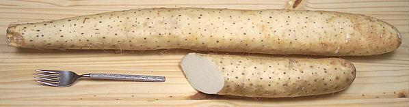

Nagaimo Yam

[Nagaimo, Yamaimo (Japan); Glutinous Yam, Cinnamon vine, Japanese
Mountain Yam, Chinese Yam; Ma (Korea); Shan yao, Huai shan,
Huai shan yao (China); Cu mai, Khoai mai (Viet);
Dioscorea polystachya]
Native to Southern China this yam has been cultivated in Japan from very
early times. Known in the U.S. mainly as an invasive weed, this vine with
arrowhead shaped leaves grows large tubers below ground and small tubers
above ground. It spreads mainly by dropping these small "air potatoes"
and rarely flowers.
Nagaimo is roughly cylindrical and may be two or three feet
long, but the photo specimen was 24 inches long, 2-7/8 inches diameter and
weighed 3-1/4 pounds. The skin is tan and the flesh is white and, unlike
other yams, sticky and more than a bit slimy. The two Japanese names,
nagaimo and yamaimo (shorter, thicker), are applied depending on the
root shape.
More on Yams.
Uses:
In China this yam is widely used in herbal
medicine, but in Japan it is more used for food. While most yams require
at least cooking to detoxify them, this yam is eaten raw and shredded
after being soaked whole in a vinegar-water solution to neutralize
oxalic acid in the skin. It is also used to make yamaimo soba noodles.
Tororo, sometimes served over sushi or with rice, is grated yam mixed
with dashi, shoyu and mirin. Some say this yam is an "acquired taste"
outside of Japan, but considering the quantities sold in Southern
California's Chinese and Southeast Asian markets, that taste seems to
have been rather widely acquired
Buying:
These are found in markets serving East Asian
and Southeast Asian communities. Most often they are cut into segments and
packaged on foam trays covered with clear shrink wrap, but some markets
have them loose, full length or cut. They should be a very light tan, a
reddish color indicates they have been on the shelf too long.
Storing:
For a yam, nagaimo is rather perishable. It
needs to be kept dry, cool and in the dark. For shipping, whole nagaimo
is often packed in sawdust but you can wrap it in newspaper and keep it
in the refrigerator or another cool place for about 2 weeks. Cut, it
should be kept refrigerated and used in less than a week. Raw grated
nagaimo can be kept frozen in a form that allows it to be broken or
cut off as needed.
Cooking:
For most traditional Japanese recipes nagaimo is
shredded or grated and used raw or lightly cooked. I find the fine
shredding side of my grater does a good job. You end up with a gooey
mush that's slimier than snail snot, but do not be discouraged - it
cooks quite well by various methods, and the result is not slimy.
Medicinal Uses:
This yam has long been important in
Chinese herbal medicine and also in Japan. It is used for a variety of
digestive and respiratory problems, diabetes, lowering blood pressure and
cholesterol, and male sexual disfunction.
It has been reported that in Japan, during the Edo period, slippery
grated nagaimo was used in the men's baths for purposes beyond the
scope of this page. For this reason it was considered improper for
women to eat it.
ym_nagaimoz 070928 - www.clovegarden.com
©Andrew Grygus - agryg@clovegaden.com - Photos on this
page not otherwise credited are © cg1 -
Linking to and non-commercial use of this page permitted.